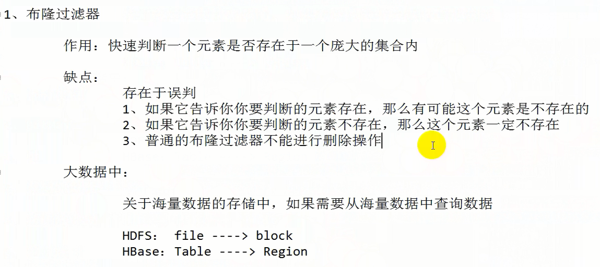

教你如何迅速秒杀掉：99%的海量数据处理面试题：
July：海量数据处理：
1、布隆过滤器


2、Hash散列

按照范围划分的规则就不会出现数据倾斜 ,因为每块数据的大小都是一样的, 如hdfs的数据块每块的大小就是按照划分的。
3、BitMap (位图)
4、堆
5、双层桶划分
6、数据库索引 (B+树)
7、倒排索引

8、外排序 (归并排序)
一般各种排序最常用的就是下面两种排序

9、Trie树 (字典树)

10、分布式解决方案：
上面的9种方案都是在没有分布式环境下解决大数据量问题的思路, 而如果有分布式环境, 则直接使用MapReduce或者Spark就可以解决海量数据的问题。
1、给个超过100G的logfile, log中存着IP地址, 设计算法找到出现次数最多的IP地址？
第一题：首先我们的思路就是利用哈希进行文件的切分，我们把100G大小的logfile分为1000份，那么下来差不多没一个文件就是100M左右，然后再利用哈希函数除留余数的方法将分配到对应的编号文件中，然后得出每个文件中出现次数最多的IP，然后堆排序取得这1000个ip中出现次数最多的。

2、与上题条件相同，如何找到topK的IP？如何直接Linux系统命令实现？
这一道题的思路就是我们从题意可以看到这道题是来找topK的IP，topK我们的思路就是用堆来实现，找Top，就需要用小堆，这个是根据堆的数据特性，我们建立成小堆，然后每次和堆顶最小的进行比较，然后再次进行向上调整，最后，就可以得到一个堆顶是最小IP，的一个小堆，这个小堆就是我们需求的K个IP，需要建的是K个节点的堆。
3、给定100亿个整数，设计算法找到只出现一次两次或者多次的整数!
由于是整数，所以我们采取的思路就是我们可以采用位图，100亿个整数，大致就是需要1.25G的内存进行存储。一个数字必须要2个位来进行表示状态，比如说，00表示不存在，01表示存在一次，10表示存在多次。这样就可以全部表示出每一个数存在的状态，这里我们就需要的内存是2.5G。
4、给两个文件，分别有100亿个整数，我们只有1G内存，如何找到两个文件件交集!
这个我们有多种思路，我们采用哈希切分，100亿个整数我们来切分为1000个文件，这样就有2000个文件，然后我们进行哈希算法，A的100亿个数根据余数不同，对应存在A0文件-A999文件，这样就完成了A的哈希切分，然后我们对B进行哈希切分，同样的思想，分出1000个文件，根据余数的不同分配到B0-B999文件中，这样我们最后就进行简单的对应编号的文件之间的比对。这样就能找到两个文件的交集
5、1个文件有100亿个int，1G内存，设计算法找到出现次数不超过2次的所有整数!
首先妖之道所有的int也就是42亿9000万多。所以这样我们也就需要这么些位来使用位图，使用两位位图，每两个位表示一个状态。对于42亿9000万多的位我们需要512M来存储，所以对于两位我们需要1G来存储，然后找到对应状态的数，统计出来就好了。
6、给两个文件，分别有100亿个query，我们只有1G内存，如何找到两个文件的交集？分别给出精确算法和近似算法!
100亿个query，我们按照一个query是10个字节算，那么我们大概需要100亿*10，下来大致需要100G容量
近似算法：使用布隆，首先我们要知道，1G所对应的也就是80亿个位，然后我们把100G的A先在1G上构造布隆，然后B和1G的进行布隆Test。如果存在，那么就是交集，这种算法肯定会有差错概率。
方案二，直接切分数据，然后进行1对多的查找，比较的时间复杂度为O(N^2)
方案三，首先我们把100G容量切分成1000个文件，然后对应的利用字符串哈希算法求得整数和1000进行除留余数，得道余数后，分别把不同的query对应到不同的余数编号的文件中去，然后再对文件进行编号相同的进行匹配，就可以找到交集。这个时候比较时间复杂度就降到了O（N）
7、如何扩展BloomFilter使得它支持删除元素的操作？
如果要支持删除，可以使用引用计数的方式，
8、如何扩展BloomFilter使得它支持计数操作？!
可以直接使用整形，这样一个位既可以表示它的状态，而且也可以进行计数的统计。
9、给上千个文件，每个文件的大小为1K—100M。给n个词，设计算法对每个词找到所有包含它的文件，你只有100K内存!
解决方案：
a：用一个文件info 准备用来保存ｎ个词和包含其的文件信息。
b：首先把ｎ个词分成ｘ份。对每一份用生成一个布隆过滤器（因为对ｎ个词只生成一个布隆过滤器，内存可能不够用，。把生成的所有布隆过滤器存入外存的一个文件Filter中。
c：将内存分为两块缓冲区，一块用于每次读入一个布隆过滤器，一个用于读文件(读文件这个缓冲区使用相当于有界生产者消费者问题模型来实现同步)，大文件可以分为更小的文件，但需要存储大文件的标示信息（如这个小文件是哪个大文件的）。
d：对读入的每一个单词用内存中的布隆过滤器来判断是否包含这个值，如果不包含，从Filter文件中读取下一个布隆过滤器到内存，直到包含或遍历完所有布隆过滤器。如果包含,更新info 文件。直到处理完所有数据。删除Filter文件。
10、有1个词典，包含N个英语单词，现在任意给定1个字符串，设计算法找出包含这个字符串的所有英语单词。
利用字典树可以进行计算，我们首先在字典树上对应上单词，然后用这个字符串对应到字典树中，这是在当内存很大的时候可以考虑的思路。
11、搜索引擎会通过日志文件把用户每次检索使用的所有检索串都记录下来，每个查询串的长度为1-255字节。
假设目前有一千万个记录（这些查询串的重复度比较高，虽然总数是1千万，但如果除去重复后，不超过3百万个。一个查询串的重复度越高，说明查询它的用户越多，也就是越热门。请你统计最热门的10个查询串，要求使用的内存不能超过1G。
这道题的思路就是：
第一步，首先进行记录的统计，
我们可以采用两种方法进行统计：
1.直接排序法
利用归并排序，然后遍历，这样的时间复杂度就是O（N+NlogN）=O（NlogN）。
2.哈希
我们也可以采用哈希的方式来进行，我们使用key-value的结构，这样就只需要遍历一遍内容就好了，所以我们花费的时间复杂度就是O（N）。
第二个方法不只是在算法时间复杂度上提高了，而且只需要对数据文件打开一次，这样操作性更好。
第二步，找出TopK
这里也提供多个思路。
思路就是使用堆，我们可以通过建立小堆的方式，使用堆排序，找出Top K个，时间复杂度是NlogN。
这样我们的最终的时间复杂度就是O（N）+O（NlogN）
或者：采用trie树，关键字域存该查询串出现的次数，没有出现为0。最后用10个元素的最小推来对出现频率进行排序。
12、有一个1G大小的一个文件，里面每一行是一个词，词的大小不超过16字节，内存限制大小是1M。返回频数最高的100个词。
这道题的思路是，因为内存限定很小，所以我们对这个1G的大文件肯定要采用分治的思想，我们可以对这个文件进行哈希拆分，分为2000个文件，那么每个文件就是500kb内容，我们这个时候对每个词进行除留余数，把词存放到对应的文件当中去，然后我们统计每个文件中出现的词和频率，（采用trie树/hash_map，,然后利用小堆得出出现次数最多的100个词，对于出现次数多的，然后我们把我词和出现的频率保存在文件当中，这样下来，这2000个文件当中就各有100个词，然后对着2000个文件再次进行归并排序。找出其中频数最高的100个词。
13、有10个文件，每个文件1G，每个文件的每一行存放的都是用户的query，每个文件的query都可能重复。要求你按照query的频度排序。
方案1，
对于这一道题的思路来说我们进行查找TOP K的算法，我们在这里首先读取10个文件，然后按照哈希切分的思想把每个查询写入到另外的10个文件当中。这样生成的文件每个也就大约1G。
找一台内存在2G左右的机器，依次对用hash_map(query, query_count)来统计每个query出现的次数。利用快速/堆/归并排序按照出现次数进行排序。将排序好的query和对应的query_cout输出到文件中。这样得到了10个排好序的文件（记为，。
方案2：
一般query的总量是有限的，只是重复的次数比较多而已，可能对于所有的query，一次性就可以加入到内存了。这样，我们就可以采用trie树/hash_map等直接来统计每个query出现的次数，然后按出现次数做快速/堆/归并排序就可以了。
方案3：
与方案1类似，但在做完hash，分成多个文件后，可以交给多个文件来处理，采用分布式的架构来处理（比如MapReduce），最后再进行合并。
14、给定a、b两个文件，各存放50亿个url，每个url各占64字节，内存限制是4G，让你找出a、b文件共同的url？ 4G内存对于320亿位。
url所占用的3200亿字节，也就是320G，我们在这进行文件分开存储，切分成1000个文件，一个文件就是320M左右，对应的url进行哈希算法，写入对应的余数编号文件当中。把a和b都这样做，然后进行编号相同的文件进行匹配。最后得出共同的。
利用布隆，把a构建成一个布隆，然后对应的和b进行test，test完以后就可以得到最后的共同的url
15、在2.5亿个整数中找出不重复的整数，注，内存不足以容纳这2.5亿个整数。
采用位图的方法，4G内存可以存320亿位，所以绝对能够存储，然后我们需要理解的就是我们需要没两个位进行表示一个整数，那么，这样就是00表示不存在，01表示存在1次，10表示出现多次的，这样我们就能找出在2.5亿中不重复出现的数了，我们呢需要用到5亿个位。
16、怎么在海量数据中找出重复次数最多的一个？
先做hash，然后求模映射为小文件，求出每个小文件中重复次数最多的一个，并记录重复次数。然后找出上一步求出的数据中重复次数最多的一个就是所求，可以利用归并排序。
17、上千万或上亿数据（有重复），统计其中出现次数最多的前N个数据。
先hash散列，然后再用hash_map，然后用堆取前N个数据
18、一个文本文件，大约有一万行，每行一个词，要求统计出其中最频繁出现的前10个词，请给出思想，给出时间复杂度分析。
方案1：这题是考虑时间效率。用trie树统计每个词出现的次数，时间复杂度是O(n*le)（le表示单词的平准长度，。然后是找出出现最频繁的前10个词，可以用堆来实现，前面的题中已经讲到了，时间复杂度是O(n*lg10)。所以总的时间复杂度，是O(n*le)与O(n*lg10)中较大的哪一个。
第一个：
请求出一个数据文件中，出现次数最多的前10个元素
求TopN
第二个：
请求出两个超大数据文件中的共同元素
求交集 / 求join
第三个：
请帮我快速判断我给你的一个元素，是否存在于一个庞大的集合内
Hash散列。用布隆过滤器:


数据分区的三种常用方式：
1、随机分区
优点：数据分布均匀
缺点：具有相同特点的数据不会保证被分配到相同的分区
2、Hash分区
优点：具有相同特点的数据保证被分配到相同的分区
特点：会产生数据倾斜
3、范围分区
优点：提高查询速度，相邻的数据都在相同的分区
缺点：部分分区的数据量会超出其他的分区，需要进行裂变以保持所有分区的数据量是均匀的
如果每个分区不排序，那么裂变就会非常困难, 所以要尽量保证分区里的数据有序。
4、自定义分区
比如按省份分区。